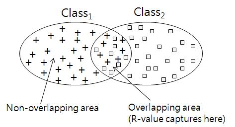

|
1. Introduction
The quality of dataset has a profound effect on classification accuracy, and there is a clear need for some method to evaluate this quality. R-value is a new dataset evaluation method. This proposed method is based on the ratio of overlapping areas among categories in a dataset. A high R-value for a dataset indicates that the dataset contains wide overlapping areas among its categories (classes), and classification accuracy on the dataset may become low. We can use the R-value measure to understand the characteristics of a dataset, the feature selection process, and the proper design of new classifiers. R-value captures overlapping areas as shown in Figure 1.

Figure1. Concept of R-value
** 3 types of R-value
- R-value between two categories (Figure 2(a))
- R-value of a category (Figure 2(b))
- R-value of a whole dataset (Figure 2(c))
Figure2. Three types of R-valuez
2. Usage
Format of Excution:
java calcRvalue [dataset file name] [K value] [seta value]
Options:
-dataset file name : dataset file for evaluation
-K value : number of nearest neighbors (optional)
-seta value : threshold to decide if a sample belongs to overlapping area or not (optional)
Examples
java calcRvalue mydataset.csv
java calcRvalue mydataset.csv 7 3
3. Download
More sample Dataset
Note
- Dataset should be .csv format.
- Only numerical vaule is allowed for dataset.
- First column of dataset should be class(category) data and shold have continuous value beginning with 0.(0,1,2,3,...)
4. Citation Request:
Sejong Oh, Improved Measures of Redundancy and Relevance for mRMR Feature Selection.
|